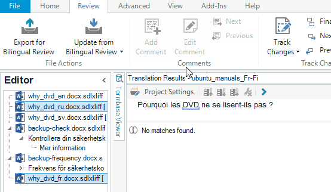

<div class="step" data-x="-1300" data-y="-1800">
    <h1>Tapaamiskerta 6: käännöseditori ja porjektit</h1>
</div>

<div class="step " data-x="-700" data-y="-1500">
    <h2>Mitä sitten, kun käännös on valmis?</h2>
</div>


<div class="step " data-x="550" data-y="-1500">
    
</div>


<div class="step " data-x="1400" data-y="-1100" >
    
</div>


<div class="step " data-x="1750" data-y="-900" >
    
</div>


<div class="step " data-x="2050" data-y="-600" >
    
</div>


<div class="step" data-x="1550" data-y="-200" data-z="0" data-scale="2">
</div>
